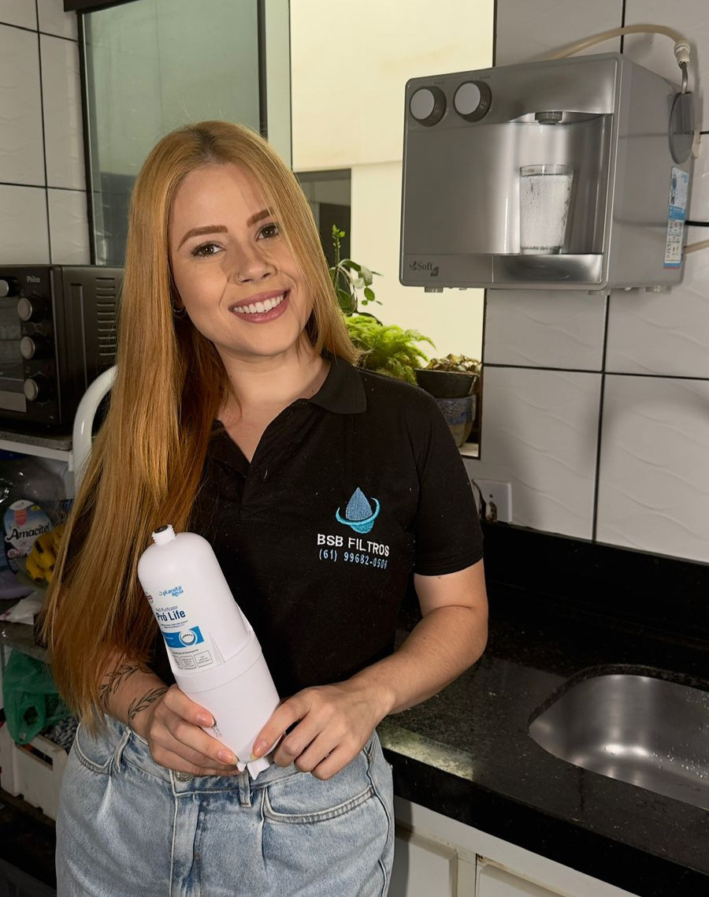

Vela tripla filtragem aprovada pela Anvisa (carvão ativado + bactericida + redução de cloro). Instalação 100% gratuita em todo o DF e Entorno. Garantia de 30 dias.
Se o seu purificador já está instalado (de bancada, parede ou acoplado à torneira) e você só precisa trocar a vela/refil — chegou no lugar certo. Atendemos filtros das marcas Everest, IBBL, Latina, Soft, Europa, Acquabios e similares. Não atendemos filtros de água central (entrada da caixa d'água).
Água com gosto de cloro, terra ou metálico? A vela saturou e parou de filtrar. Você está bebendo água pior que a da torneira.
Demora uma eternidade pra encher o copo? O carvão está entupido. Continuar usando assim pode estourar o filtro.
Toda vela tem validade de 6 meses. Passou disso, ela vira criadouro de bactérias dentro da sua casa.
Baratinhas e formigas aparecendo perto do purificador? Sinal de vela contaminada. Risco real à saúde da família.
As fabricantes de filtro cobram caro pela vela com a logo delas. Tecnicamente, a vela Planeta Água passa pelos MESMOS testes da Anvisa e usa os MESMOS materiais filtrantes.
Você está pagando pela marca — não pela água limpa. Já instalamos em milhares de casas no DF sem uma única reclamação de qualidade.
Nosso técnico vai até você. Em casa, no escritório, no comércio. Você não carrega filtro, não vai pra loja, não perde tempo.
Zero risco. O técnico chega, instala, testa o fluxo, e SÓ ENTÃO você paga. Pix, dinheiro ou cartão na hora.
Chamou hoje, trocamos hoje (sujeito à agenda). Em até 24h na maioria dos bairros do DF e Entorno.
Vazou? Voltamos. Vela com defeito? Trocamos. Mangueira rachada? Substituímos (peça comprada à parte). Sem letrinhas miúdas.
Não é montador de móveis fazendo bico. É técnico treinado especificamente em purificadores residenciais e comerciais.
Plano Piloto, Águas Claras, Taguatinga, Ceilândia, Sobradinho, Gama, Valparaíso, Águas Lindas e todo o Entorno.
Manda a marca do seu filtro ou uma foto. A gente confirma o modelo da vela e o valor em menos de 5 minutos.
Você escolhe o horário. Técnico vai com vela nova, ferramentas e tudo que precisa. Zero dor de cabeça pra você.
Trocamos a vela, testamos o fluxo, limpamos o copo do filtro e SÓ DEPOIS você paga. Pix, cartão ou dinheiro.
"A água tava com gosto horrível e o moço veio no mesmo dia. Trocou, testou, eu paguei só no final. Sério, achei que tinha pegadinha. Não tinha. Recomendo demais."
"Tenho um restaurante e o filtro tava com fluxo lento. Em 40 minutos eles resolveram. Tô na 3ª troca com eles. Profissionais."
"Vela vencida há meses. Marquei pelo WhatsApp 9h, 13h o técnico tava aqui. Educado, rápido, água ficou perfeita."
"Tinha receio da vela não ser 'original', mas o técnico explicou direitinho a certificação Anvisa. Já são 4 meses, água continua excelente."
Não. É vela Planeta Água, com certificação Anvisa e qualidade técnica equivalente. Custa menos porque você não paga pela marca — paga pela água limpa. Compatível com Everest, IBBL, Latina, Soft, Europa e outros.
Depende do modelo do seu filtro. Manda uma foto no WhatsApp que a gente passa o valor exato em até 5 minutos. Spoiler: é bem mais barato que comprar a vela na loja e ainda instalar você mesmo.
Você só paga quando a instalação for concluída. Se algo der errado, refazemos o serviço.
Atendemos todo o Distrito Federal e Entorno. Mande seu bairro no WhatsApp pra confirmar agenda.
6 meses em uso residencial padrão. Em comércios e ambientes com alto consumo, 3 a 4 meses. A gente avisa quando estiver na hora da próxima troca.
Não. Trabalhamos exclusivamente com troca de velas/refis. Se você precisa de um purificador novo, indicamos procurar lojas especializadas.

Fundada em 2022, a BSB Filtros nasceu da coragem e dedicação de sua fundadora, que antes de se tornar empresária atuou como funcionária da área, adquirindo experiência e aprendendo na prática o valor de um atendimento de qualidade.
Hoje, sob direção única de sua proprietária, a empresa é especializada na troca de velas para purificadores de água, atendendo todas as marcas do mercado.
Atuamos em todo o Distrito Federal com os melhores preços, atendimento humanizado e total transparência. Mais do que um serviço, oferecemos uma relação de confiança para levar qualidade e bem-estar a milhares de famílias do DF.
BSB Filtros — a força de uma mulher empreendedora a serviço da sua água pura.
Cada dia com a vela saturada é um dia bebendo água pior que a da torneira. Resolve hoje. Você só paga depois.
📱 Chamar no WhatsApp Agora